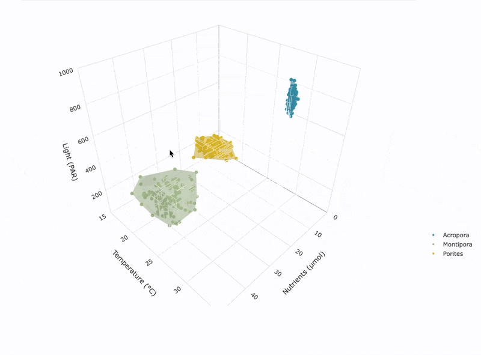

{ecosim} - interactive ecological simulations for teaching
a collection of interactive apps to simulate ecological theory
r • plotly • shiny • leaflet • js
- contact: g.roff @ uq.edu.au
{ecoNiche}: multispecies niche simulator

A tool to explore and visualize the ecological niches of multiple marine species in either 2D or 3D space. The app provides a simulation-based interface where users can adjust environmental variables (temperature, light, nutrients) and species traits to see how different organisms may occupy distinct or overlapping regions of environmental space.
[Launchapp] [View source code]
The “niche space” is visualized as convex hulls surrounding the simulated environmental conditions occupied by individuals of each species, providing an approximation of their realized niche breadth and position within environmental gradients. The app can be used to reflect ecological concepts like niche partitioning, competition, and environmental filtering by generating synthetic individuals for each species based on user-defined means and standard deviations. The realized niche space is represented as convex hulls encapsulating individual data points for each species, offering insights into the breadth and position of their ecological tolerances.
The app is built with Shiny, plotly, and shinyjs for interactivity, and uses cxhull for 3D convex hull construction. Users define the number of species and adjust sliders for each species’ environmental preferences. Data points are generated with rnorm() and filtered to stay within ecological bounds.
- 2D view:
plotlyscatterplotx,y(temperature vs. light) with optional convex hulls and points - 3D view,
plotlyscatterplotx,y(temperature vs. light) withz(nutrients) with optional convex hulls (cxhulland transparent meshes)
The UI dynamically adapts to the number of species and species names, using colored tabs and responsive components, and users can switch between 2D and 3D interactive plots.
Second-Year Ecology Questions
How does niche overlap change as environmental variance increases?
“How does increasing the standard deviation of light or temperature for two competing species affect their niche overlap and potential for coexistence?”
[concepts: niche breadth, competitive exclusion, environmental tolerance]
What happens to species distributions when one niche shifts due to climate change?
“How does a 2°C increase in mean temperature for a single species impact its niche position relative to others?”
[concepts: climate change effects, realized niche, range shifts]
Can multiple species coexist in similar niche spaces?
“Can more than two species coexist if they occupy similar mean environmental values but have different niche widths?”
[concepts: resource partitioning, limiting similarity]
Third-Year Ecology Questions
How does the addition of a third dimension (nutrients) affect niche differentiation?
“How does switching from 2D to 3D niche space affect the perceived overlap between coral and seagrass niches?”
[concepts: niche dimensionality, hypervolume theory]
Do species with broader environmental tolerances dominate niche space?
“When increasing variance for one species, how much of the total environmental volume does its niche occupy relative to others?”
[concepts: niche breadth, generalist vs specialist strategies]
How does niche packing differ between communities with different species richness?
“How does the structure of niche space change when comparing communities with 2, 5, and 10 species?”
[concepts: community assembly, niche packing limiting similarity]
Source code
Future updates
- include biotic interactions / dispersal boundaries to introduce fundamental vs realised niche space
- introduce Hutchinson’s n-dimensional hypervolume (integrate with the
hypervolumepackage) to include additional environmental drivers - expand different approaches to determining niches (e.g. KDE, Minimum Volume Ellipsoid) and additional distributions for simulating tolerances
{ecoDisturb}: disturbance and community structure simulator

Simulate how varying disturbance frequency and intensity affect species richness and community composition over time, using patch dynamics and stochastic colonization/extinction.
{ecoInteract}: species interactions & population dynamics simulator
Simulate Lotka-Volterra models (predator-prey, competition, mutualism) and explore how interaction coefficients and environmental constraints affect population trajectories.
{ecoRestore}: optimising spatial decisionmaking for effective restoration outcomes
Simulate how environmental variability, habitat selection and management zoning influences the prioritisation of restoration sites across a marine landscape. Through simulation approaches, explore trade-offs, sensitivity, and strategies in spatial planning under uncertainty.